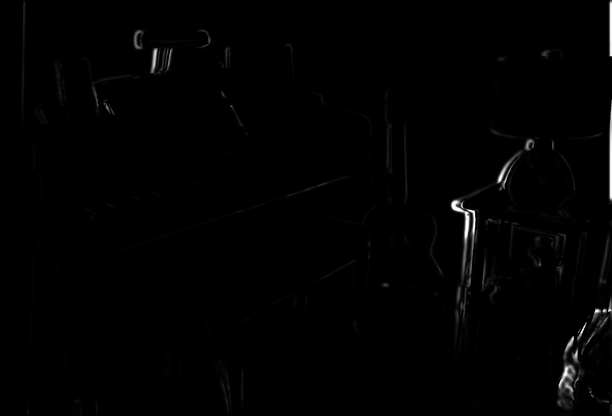

Computer Vision HW3
Occlusion
Histograms of Error
| Pixel Error | Wavelet Error |
|  |
| |
| Pixel error histogram with largest 10% reduced | Wavelet error histogram with largest 10% reduced |
Minumum Errors
| mean | sigma | noise mean | noise sigma |
| Pixel error | 3.1152e-04 | 5.0417e-04 | 3.6522e-04 | 6.2177e-04 |
| Wavelet error | 1.0738e-04 | 3.1330e-04 | 1.5326e-04 | 4.0149e-04 |
Code
[ DL s ] = parsePfm('Piano-perfect/disp0.pfm');
[ DR s ] = parsePfm('Piano-perfect/disp1.pfm');
ImL = im2double(rgb2gray(imread('Piano-perfect/im0.png')));
ImR = im2double(rgb2gray(imread('Piano-perfect/im1.png')));
%len = 100;
%DL = DL(1:len, 1:len);
%ImL = ImL(1:len, 1:len);
%ImR = ImR(1:len, 1:len);
% occlusion
s = size(DL)
h = s(1);
w = s(2);
O = occlusion(DL, DR);
% pixel error
EP = pixel_error(ImL, ImR, DL);
% feature error
ES = feature_error(ImL, ImR, DL);
O_vec = reshape(O, 1, h*w);
EP_vec = reshape(EP, 1, h*w);
EP_vec_noO = EP_vec(O_vec == 1);
%hist(EP_vec, 20);
ES_vec = reshape(ES, 1, h*w);
ES_vec_noO = ES_vec(O_vec == 1);
%hist(ES_vec, 20);
EP_vec_sort = sort(EP_vec);
ES_vec_sort = sort(ES_vec);
len = floor(length(EP_vec_sort) * 0.9);
EP_vec_sort = EP_vec_sort(1:len);
ES_vec_sort = ES_vec_sort(1:len);
[EP_h edge] = histogram(EP_vec_sort, 20);
[ES_h edge] = histogram(ES_vec_sort, 20);
%bar(edge, EP_h, 'BarWidth', 1);
%bar(edge, ES_h, 'BarWidth', 1);
[EP_m EP_tho] = statistic(EP_h, edge)
[ES_m ES_tho] = statistic(ES_h, edge)
% error with disparity change
DLR = DL + round(rand(h,w))*4 - 2;
EPR = pixel_error(ImL, ImR, DLR);
ESR = feature_error(ImL, ImR, DLR);
EPR_vec = reshape(EPR, 1, h*w);
ESR_vec = reshape(ESR, 1, h*w);
EPR_vec_sort = sort(EPR_vec);
ESR_vec_sort = sort(ESR_vec);
len = floor(length(EPR_vec_sort) * 0.9);
EPR_vec_sort = EPR_vec_sort(1:len);
ESR_vec_sort = ESR_vec_sort(1:len);
[EPR_h edge] = histogram(EPR_vec_sort, 20);
[ESR_h edge] = histogram(ESR_vec_sort, 20);
[EPR_m EPR_tho] = statistic(EPR_h, edge)
[ESR_m ESR_tho] = statistic(ESR_h, edge)
function [O] = occlusion(DL, DR)
s = size(DL);
h = s(1);
w = s(2);
O = zeros(h,w);
for r = 1:h
for c = 1:w
dl = DL(r,c);
if(c - int32(round(dl)) > 0)
dr = DR(r,c - int32(round(dl)));
if(abs(dl - dr) > 0.3)
O(r,c) = 0;
else
O(r,c) = 1;
end
else
O(r,c) = 0;
end
end
end
end
function [EP] = pixel_error(ImL, ImR, DL)
% pixel error
s = size(DL)
h = s(1);
w = s(2);
EP = zeros(h,w);
for lr = 1:h
lr
for lc = 1:w
dl = int32(round(DL(lr,lc)));
rr = lr;
rc = lc - dl;
if rc > 0 && rc <= w
left = min(min(rc - 1, 15), min(lc - 1, 15));
right = min(min(w - rc, 16), min(w - lc, 16));
up = min(min(rr - 1, 15), min(lr - 1, 15));
down = min(min(h - rr, 16), min(h - lr, 16));
Patch = ImL(lr-up:lr+down, lc-left:lc+right) - ImR(rr-up:rr+down, rc-left:rc+right);
psize = size(Patch);
EP(lr, lc) = sum(sum(Patch.*Patch))/(psize(1)*psize(2));
end
end
end
end
function [ES] = feature_error(ImL, ImR, DL)
s = size(DL)
h = s(1);
w = s(2);
% feature error
ImFL = wavelet(ImL);
ImFR = wavelet(ImR);
ES = zeros(h,w);
for lr = 1:h
lr
for lc = 1:w
dl = int32(round(DL(lr,lc)));
rr = lr;
rc = lc - dl;
if rc > 0 && rc <= w
diff = ImFL(lr, lc, :) - ImFR(rr, rc, :);
ES(lr, lc) = sum(diff.^2)/length(diff);
end
end
end
end
function img_feature = wavelet(ori_img)
%ori_img = imread('butterfly.jpg');
%ori_img = double(rgb2gray(ori_img));
s = size(ori_img);
img_feature = zeros(s(1), s(2), 19);
sizeFactor = 2;
G = Gaussian(6);
cnt = 1;
img = conv2(ori_img, G, 'same');
img_feature(:,:,cnt) = img;
cnt = cnt+1;
%img = imresize(img, 1/sizeFactor);
%img = double2gray(img);
%imwrite(img, 'l0.jpg');
% generate wavelet filter
thoLs = [1 3 6];
thetaLs = [0 pi/6 pi/3 pi/2 2*pi/3 5*pi/6];
eta = 4;
width = 18;
flt = zeros(18, width*2+1, width*2+1);
for k = 1:3
for j = 1:6
%convolve image with morlet filter
F = Morlet(thoLs(k), thetaLs(j), eta, width);
img = conv2(ori_img, F, 'same');
img = (img.*conj(img)).^0.5;
%gaussian blur
cnt
img = conv2(img, G, 'same');
img_feature(:,:,cnt) = img;
cnt = cnt+1;
%downsample
%img = imresize(img, 1/sizeFactor);
%img = double2gray(img);
%imwrite(img, ['l1_' num2str(k) '_' num2str(j) '.jpg']);
end
end
function [z] = Gaussian(tho)
tho = 6;
x = linspace(-3*tho,3*tho,6*tho+1);
y = x';
[X,Y]=meshgrid(x,y);
z = exp(-(X.^2+Y.^2)./(2*tho^2));
z = z/sum(sum(z));
end
function [m tho P] = statistic(H, edge)
P = H/sum(H);
len = length(P);
m = 0;
m2 = 0;
for i = 1:len
m = m + P(i) * edge(i);
m2 = m2 + P(i) * edge(i)^2;
end
tho = (m2 - m^2)^0.5;
end